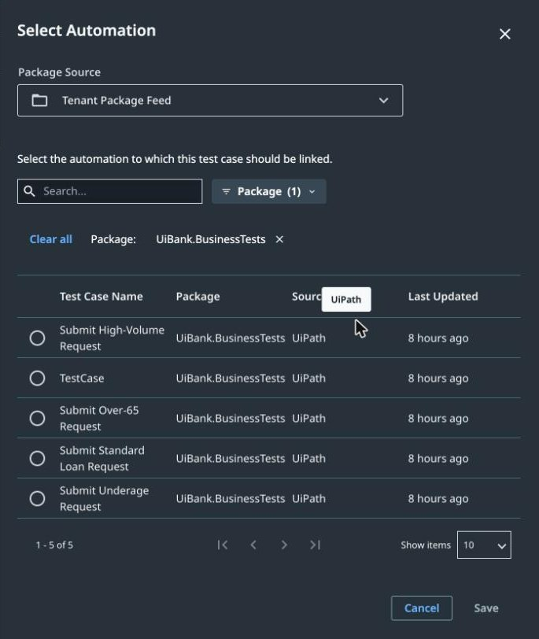
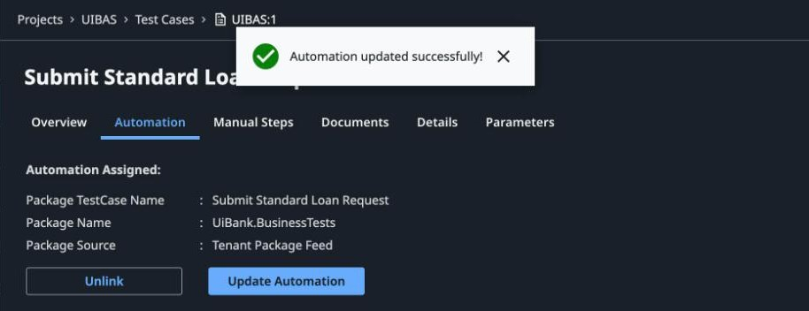
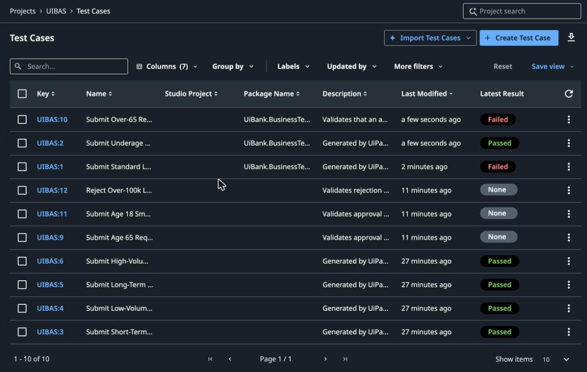

6. Automate with Studio Web¶
Why it matters for you: an automated test gives the same answer every time and costs no AI to repeat. It is how your manual checks become a regression set that runs every night, without anyone clicking through UiBank.
Your trainer turns a manual test case into an automated test in Studio Web and publishes it. Then you link three of your test cases to the trainer's automated tests, so a robot can run them in step 7.
Watch: from test case to automated test¶
Trainer demo Studio Web
You watch this part, about 15 minutes. You don't need to build automations yourself: in most teams, an automation colleague does it. What matters is that you know what happens to your test case, and what the robot checks.
Studio Web is UiPath's browser-based design tool. A Tests project in Studio Web holds automated tests, each linked to a test case in Test Manager. Your trainer built four of them in the project UiBank.BusinessTests:
| Automated test | What it checks | Result today |
|---|---|---|
| Submit Standard Loan Request | A 34-year-old asking for $50,000 is approved ("Congrats…") | Passes |
| Submit Underage Request | A 17-year-old is rejected ("Sorry…") | Passes |
| Submit Over-65 Request | A 66-year-old is rejected ("Sorry…") | Fails – UiBank approves the loan |
| Submit High-Volume Request | A spare the trainer keeps in reserve | Fails |
1 – Create the automated test¶
- In Test Manager, the trainer opens a test case with no automation yet, for example Submit Short-Term Request, and goes to its Automation tab. It says No automation has been assigned to this test case. and offers two buttons: Select Automation (link a test that already exists – you do this below) and Automate in Studio Web (create a new one, Test Cloud only).
-
The trainer selects Automate in Studio Web. In the panel, they type a new Project name to create the Tests project, pick or create the Test case, and select Add automation. Test Manager confirms with Automation updated successfully!

-
The Automation tab now shows Studio Link Information and an Open in Studio Web button, which opens the test in a new browser tab.
2 – Build and check it¶
In Studio Web, an automated test is a short list of steps, called activities, that read much like your manual steps:
✅ Use Browser – open UiBank's loan form in Chrome
✅ Type Into and Select Item – fill in email, amount, term, income and age
✅ Click – submit the application
✅ Get Text – read the result heading UiBank shows
✅ Verify – compare it with the expected result, for example "contains Sorry". This is your acceptance criterion, turned into a check the robot can make.
The trainer can record the clicks and typing instead of adding each activity by hand, with the Autopilot Recorder: it watches what you do in the browser and writes the activities for you (Autopilot Recorder).
Then the trainer selects Debug to run the test in the cloud:
- Submit Standard Loan Request passes: the Verify reports that the verification passed.
- Submit Over-65 Request fails: the Verify expected "Sorry" and UiBank returned "Congrats!". The same defect you found by hand in step 4.
The right-hand panel shows Linked test cases: the Test Manager test case this automated test belongs to.
3 – Publish it¶
A test can only run on a robot after it is published – packaged and stored where Test Manager and the robots can find it.
- The trainer selects Publish. The dialog sets the version (1.0.0 the first time) and the Location.
- The default location is not the one Test Manager reads, so the trainer picks Orchestrator Tenant Processes Feed and publishes.
- Back in Test Manager, the test case's Automation tab now shows Automation Assigned, with Package Source: Tenant Package Feed.
The result is one package, UiBank.BusinessTests, that holds all four tests. Every learner in the class can link to it. See Automating test cases in Studio Web and Publishing a project.
Think about it: which tests are worth automating?
Automate the checks you repeat every release and whose answer you can state exactly, like the age rules. Keep one-off and judgment checks (does the page look right?) manual, or hand them to Delegate or Run autonomously (Preview).
Link your test cases to the automated tests¶
Test Manager
Now you connect three test cases in your project to the trainer's automated tests with the same names. About 10 minutes.
Before you start
✅ Your project has a test case named exactly Submit Over-65 Request, from 3. Generate Test Cases. If yours has another name, rename it first, as described in step 3.
✅ Submit Standard Loan Request and Submit Underage Request came with the project you imported in step 1.
It's your turn now!
- In your project, go to Test Cases and open Submit Standard Loan Request.
- Go to the Automation tab and select Select Automation.
- In the Select Automation panel, keep Package Source on Tenant Package Feed. The list shows Test Case Name, Package, Source and Last Updated.
- Shorten the list. The search box matches test case names only, so type the test case name, for example
Standard LoanorOver-65. TypingUiBank.BusinessTeststhere gives No results. To filter by package instead, open the Package filter, tick UiBank.BusinessTests and select Apply. -
Select the row Submit Standard Loan Request whose Package is UiBank.BusinessTests, and select Save.

-
The message Automation updated successfully! confirms it. The Automation tab now shows Package TestCase Name, Package Name (UiBank.BusinessTests) and Package Source (Tenant Package Feed), with the buttons Unlink and Update Automation.

-
Repeat steps 1–6 for Submit Underage Request and for Submit Over-65 Request, each time picking the test of the same name.
Pick the right row
✅ Ignore the entry called TestCase. It is an empty default file in the trainer's project, not a test.
✅ Ignore Submit High-Volume Request: it is the trainer's spare.
✅ Ignore packages with other names: they belong to other projects on the shared tenant.
✅ Picked the wrong test? Open the test case's Automation tab, select Update Automation and pick again.
Check the Package Name column¶
Check it
In Test Cases, the Package Name column shows UiBank.BusinessTests for Submit Standard Loan Request, Submit Underage Request and Submit Over-65 Request. Your other test cases stay empty: they remain manual.

Can't see the trainer's package, or Save fails? Tell your trainer: they can link the three test cases for you, so you can carry on with step 7.
Optional: build one yourself (not rehearsed)
Curious how it feels to build a test? Try it after the workshop, or now if you finish early. You need:
✅ An App Test Developer licence – building automated tests is not included with App Tester.
✅ The UiPath Studio Web browser extension, in the same browser as UiBank, and UiPath Assistant signed in on your machine to record or pick screen elements.
Use a spare test case such as Submit Short-Term Request, never the three you just linked. On its Automation tab, select Automate in Studio Web and create a new project with your initials in the name, for example UiBank.Tests.<your initials>: a shared Tests project allows only one editor at a time. Then follow About tests in Studio Web.
Nice work!¶
Three of your test cases are now linked to automated tests. In the next step you group them into a regression set with Autopilot chat and run them on a cloud robot.
Next → 7. Build and Run the Regression Set